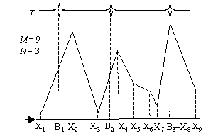

Consider a landscape composed of connected line segments:

Above the landscape, N light bulbs are hang at the same height
T in various horizontal positions. The purpose of these light
bulbs is to light up the entire landscape. A landscape point is considered
lit if it can "see" a light bulb directly, that is, if the line segment
which links the point with a bulb does not contain any other landscape
segments point.
Task
Write a program that determines the mi-ni-mum number of light bulbs
that must be switched on in order to illuminate the entire landscape.
Input
Input file name: LIGHT.IN Line 1: M
An integer, the number of landscape height specifications,
including the first and the last point of the landscape. Lines 2..M+1: Xi Hi
Two integers, separated by a space: the landscape height Hi
at horizontal position Xi, 1 <= i <= M; for 1 <=
i <= M-1 we have Xi+1 > Xi; any two consecutive
specified points identify a segment of line in the landscape. Line M+2: N T
Two integers, separated by a space, the num-ber of light bulbs and
their height coordinate (altitude). The bulbs are numbered from 1 to
N) Line M+3: B1 B2 ... BN
N integers, separated by spaces: the hori-zon-tal coordinates of the
light bulbs Bi+1 > Bi, 1 � i � N-1;
Output
File name: LIGHT.OUT Line 1: K
An integer: the minimum number of light bulbs to be switched on.
Line 2: L1 L2 ... LK
K integers, separated by spaces: the labels of the light bulbs to be
switched on spe-cified in increasing order of their horizontal
coordinates.
Limits
1 <= M <= 200
1 <= N <= 200
1 <= Xi <= 10000 for 1 <= i <= M
1 < T <= 10000
1 <= Hi <= 10000 for 1 <= i <= M
T > Hi for any 1 <= i <= M
X1 <= B1 and BN <= X
M
The task always has a solution for the test data. If there are
multiple solutions, only one is required.